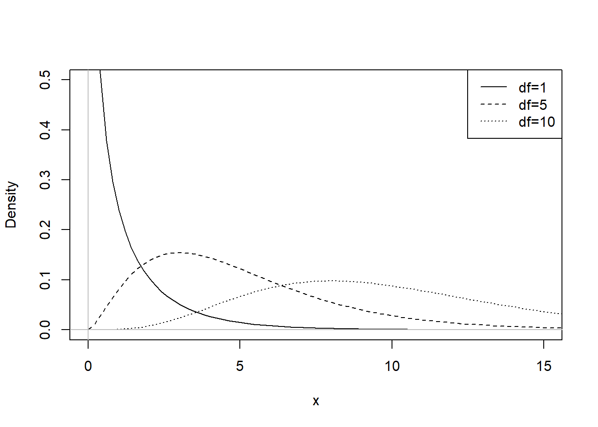
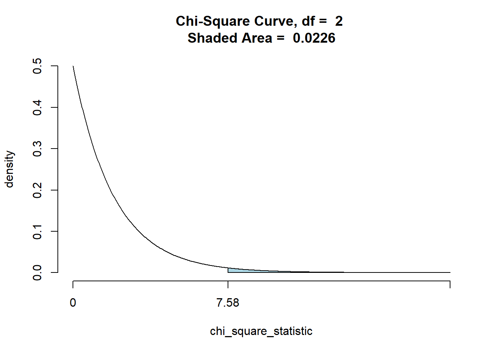

Chapter 11 \(\chi^2\) Test
11.1 Testing Categorical Variables or Contingency Tables– \(\chi^2\) Test
- Goodness-of-Fit Test: A goodness-of-fit test is used to test the hypothesis that an observed frequency distribution fits (or conforms to) some claimed distribution.
- Conduct a goodness-of-fit test, which is a hypothesis test to determine whether a single row (or column) of frequency counts agrees with some specific distribution (such as uniform or normal).
- What if we are interested in seeing if a candy manufacture’s process actually produces equal amounts of each color. What can I do?
11.2 Chi-Squared Test (\(\chi^2\))
- Used to test the counts of categorical data
- Three Types
- Goodness of fit (univariate)
- Independence (bivariate)
- Homogeneity (univerate with two samples)
- Goodness of fit (univariate)
11.3 \(\chi^2\) Distribution

- Different df have different curves
- Skewd to the right
- As df increases, curve shifts toward right and becomes more like a normal curve.
11.4 \(\chi^2\) Assumptions
- SRS
- All expected counts are greater than or equal to 5
- Observations are mutually exclusive and independent.
11.5 Hypothesis Statetment: Write in Context
\[H_0: \textrm{The frequency counts agree with the claimed distribution}\\ H_A: \textrm{The frequency counts do not agree with the claimed distribution. } \]
Or use math symbols: \[H_{0}: p_1=p_2\cdots=p_n\\H_A: \textrm{At least one proportion is different from the others}\] ## \(\chi^2\) formula \[\chi^2=\sum\frac{(Observed-Expected)^2}{Expected}\] or \[\chi^2=\sum\frac{(O-E)^2}{E}\]
11.6 First Case: \(\chi^2\) Goodness-of-Fit Test
- Uses univariate data
- Want to see how well the observed counts fit what we expect the counts to be.
- df=number of categories-1
- Same procedures as hypothesis testings
11.7 How do we find the expected counts
- If categories have the same proportion, use \(E=\frac{n}{k}\), where n is the total counts, and k is the number of categories.
- If categories have different proportions, use \(E=np\), where n is the total counts, and p is the proportion for each category.
11.8 Example
Does your zodiac sign determine how successful you will be? Fortune magazine collected the zodiac signs of 256 heads of the largest 400 companies. Is there sufficient evidence to claim that successful people are more likely to be born under some signs than others?
| Counts | Aries | Taurus | Gemini | Cancer | Leo | Virgo | Libra | Scorpio | Sagittarius | Capricorn | Aquarius | Pisces |
|---|---|---|---|---|---|---|---|---|---|---|---|---|
| Observed | 23 | 20 | 18 | 23 | 18 | 21 | 19 | 22 | 20 | 19 | 24 | 29 |
| Expected |
How many would you expect in each sign if there were no difference between them? How many degrees of freedom?
- Assumptions
- SRS
- All expected counts \(\geq 5\)
- The number of CEO’s born under each zodiac sign is mutually exculsive and independent
Hypothesis Statement
- \[H_0: \text{The number of CEO's born under each sign is the same}\\H_A:\text{The number of CEO's born under each sign is different} \]
- Calculation:
- Traditional Way: \[ \chi^2=\sum\frac{(O-E)^2}{E}=\frac{(23-21.3)^2}{21.3}+\frac{(20-21.3)^2}{21.3}+\cdots +\frac{(29-21.3)^2}{21.3}=5.094\]
Use the p-value method( Always use the right-tail test)
## Aries Taurus Gemini Cancer Leo Virgo
## 23 20 18 23 18 21
## Libra Scorpio Sagittarius Capricorn Aquarius Pisces
## 19 22 20 19 24 29## Chi-squared test for given probabilities
##
## Observed counts Expected by Null Contr to chisq stat
## Aries 23 21.3 0.13
## Taurus 20 21.3 0.08
## Gemini 18 21.3 0.52
## Cancer 23 21.3 0.13
## Leo 18 21.3 0.52
## Virgo 21 21.3 0.01
## Libra 19 21.3 0.26
## Scorpio 22 21.3 0.02
## Sagittarius 20 21.3 0.08
## Capricorn 19 21.3 0.26
## Aquarius 24 21.3 0.33
## Pisces 29 21.3 2.76
##
##
## Chi-Square Statistic = 5.09
## Degrees of Freedom of the table = 11
## P-Value = 0.926- Conclusion
- Since p-value>\(\alpha\), I fail to reject to \(H_0\). There is not sufficient evidence to suggest that the number of CEO’s born under each sign is different.
11.9 Example
A company says its premium mixture of nuts contains 10% Brazil nuts, 20% cashews, 20% almonds, 10% hazelnuts and 40% peanuts. You buy a large can and separate the nuts. Upon weighing them, you find there are 112 g Brazil nuts, 183 g of cashews, 207 g of almonds, 71 g or hazelnuts, and 446 g of peanuts. You wonder whether your mix is significantly different from what the company advertises? Why is the chi-square goodness-of-fit test NOT appropriate here?
11.10 Example
- Offspring of certain fruit flies may have yellow or ebony bodies and normal wings or short wings. Genetic theory predicts that these traits will appear in the ratio 9:3:3:1(yellow & normal, yellow & short, ebony & normal, ebony & short) A researcher checks 100 such flies and finds the distribution of traits to be 59, 20, 11, and 10, respectively.
- What are the expected counts?
- df?
- What are the expected counts?
Are the results consistent with the theoretical distribution predicted by the genetic model?
11.11 Example
- According to Benford’s law, many data sets have the property that the leading (first) digits follow the distribution shown in the first two rows of the table below. The bottom row lists the frequencies of leading digits of Internet traffic inter-arrival times. Do the frequencies in the bottom row fit the distribution according to Benford’s Law?
11.12 Contingency Table
- Contingency Table: A contingency table (or two-way frequency table) is a table consisting of frequency counts of categorical data corresponding to two different variables. (One variable is used to categorize rows, and a second variable is used to categorize columns.)
- Test of Independence: In a test of independence, we test the null hypothesis that in a contingency table, the row and column variables are independent. (That is, there is no dependency between the row variable and the column variable.)
11.13 \(\chi^2\) test for independence
- Used with categorical, bivariate data from ONE sample
- Used to see if the two categorical variables are associated (dependent) or not associated (independent).
- Assumptions & formula remain the same!
- Hypothesis Statement - written in words \[H_0:\text{Two variables are independent}\\ H_A:\text{Two variables are dependent}\]
Be sure to write in context!
11.14 Example
A beef distributor wishes to determine whether there is a relationship between geographic region and cut of meat preferred. If there is no relationship, we will say that beef preference is independent of geographic region. Suppose that, in a random sample of 500 customers, 300 are from the North and 200 from the South. Also, 150 prefer cut A, 275 prefer cut B, and 75 prefer cut C.
Based on the information, we can make a table like this:
| North | South | Total | |
|---|---|---|---|
| Cut A | 90 | 60 | 150 |
| Cut B | 165 | 110 | 275 |
| Cut C | 45 | 30 | 75 |
| Total | 300 | 200 | 500 |
- Find the expected counts.
Better Way to find the Extected Counts \[E=\frac{\text{row total}\cdot \text{column total}}{\text{grand total}}\]
Degrees of freedom \[df=(r-1)(c-1)\]
Where r is the number rows, c is the number of column. Ignore the row for the total and the column for the total. Or cover up one row and one column then count the number of cells remaining!
11.15 Example: Continued
Suppose the observe vaules for the question above is below:
| North | South | Total | |
|---|---|---|---|
| Cut A | 100 | 50 | 150 |
| Cut B | 150 | 125 | 275 |
| Cut A | 50 | 25 | 75 |
| Total | 300 | 200 | 500 |
Is there sufficient evidence to suggest that geographic regions and beef preference are not independent?
- Assumptions
- SRS
- All expected \(\geq 5\)
- SRS
Hypothesis Statement \[H_0: \text{Geographic regions and beef preference are independent}\\ H_A: \text{Geographic regions and beef preference are not independent}\]
Calculation
## North South
## Cut A 100 50
## Cut B 150 125
## Cut C 50 25## Pearson's Chi-squared test
##
## Observed Counts:
## North South
## Cut A 100 50
## Cut B 150 125
## Cut C 50 25
##
## Counts Expected by Null:
## North South
## Cut A 90 60
## Cut B 165 110
## Cut C 45 30
##
## Contributions to the chi-square statistic:
## North South
## Cut A 1.11 1.67
## Cut B 1.36 2.05
## Cut C 0.56 0.83
##
##
## Chi-Square Statistic = 7.58
## Degrees of Freedom of the table = 2
## P-Value = 0.0226
- Interpretation
- Since p-value<\(\alpha\), I reject \(H_0\). There is sufficient evidence to suggest that geographic regions and beef preference are not independent.
11.16 Example
11.17 \(\chi^2\) Test of Homogenity
- A \(\chi^2\) test of homogeneity is a test of the claim that different populations have the same proportions of some characteristics.
- Assumptions & formula remain the same!
- Expected counts & df are found the same way as test for independence.
- Only change is the hypotheses!
- Hypothesis Statement - written in words \[H_0:\text{The distributions are the same}\\ H_A:\text{The distributions are different}\]
Be sure to write in context!
11.18 Example
The following data is on drinking behavior for independently chosen random samples of male and female students. Does there appear to be a gender difference with respect to drinking behavior? (Note: low = 1-7 drinks/wk, moderate = 8-24 drinks/wk, high = 25 or more drinks/wk)
| Men | Women | |
|---|---|---|
| None | 140 | 186 |
| Low | 478 | 661 |
| Moderate | 300 | 173 |
| High | 63 | 16 |
- Assumptions
- SRS
- All expected \(\geq 5\)
- SRS
Hypothesis Statement \[H_0: \text{Ther is no gender difference with respect to drinking behavior}\\ H_A: \text{There is gender difference with respect to drinking behavior} \]
Calculation
## Men Women
## None 140 186
## Low 478 661
## Moderate 300 173
## High 63 16## Pearson's Chi-squared test
##
## Observed Counts:
## Men Women
## None 140 186
## Low 478 661
## Moderate 300 173
## High 63 16
##
## Counts Expected by Null:
## Men Women
## None 158.6 167.4
## Low 554.0 585.0
## Moderate 230.1 242.9
## High 38.4 40.6
##
## Contributions to the chi-square statistic:
## Men Women
## None 2.17 2.06
## Low 10.42 9.87
## Moderate 21.27 20.14
## High 15.72 14.89
##
##
## Chi-Square Statistic = 96.5
## Degrees of Freedom of the table = 3
## P-Value = 0- Conclusion
- Since p-value<\(\alpha\), I reject \(H_0\). There is sufficient evidece to suggest that there is gender difference with respect to drinking behavior.